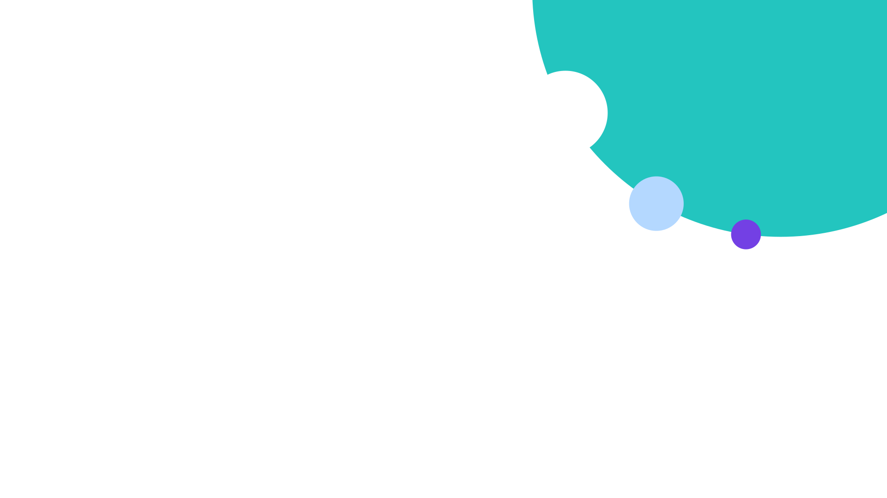

Social
Social posts are single-idea and built from the core system: one message, one visual. Lead with a light device, the dots, or a photograph; the specifics are below.
We integrate healthcare.
One platform trusted by 1,900+ teams worldwide.
See how →
1:1 post, light device (Aurora). Full canvas: mobile-size headline, one support line, a text-link CTA, copy clear of the glow.
Every system, connected.
Agent-ready interoperability for EHRs, labs, and payers.
Explore the platform →
1:1 post, dot accent. Same structure on white: multicolor scattered field from the right edge, copy in navy and blue.
Care that connects.
Real outcomes from teams building on Rhapsody.
Read the story →
1:1 post, photography-led. Bottom navy scrim carries the wordmark and copy; the photo is the visual, no device.

Every system, connected.
Agent-ready interoperability on a platform teams trust.
See how →
1:1 post, Rhapsody Blue. Big dot device offset to the corner, white copy, one text-link CTA (dots on blue, never a light device).
Quote banner
A landscape quote banner pairs one short customer line with a light device, for profile and channel headers, in-feed landscape posts, and slide headers. One device, copy clear of the glow; this quote is about connection, so it uses Plexus (the connected-network device).
“
“Rhapsody gave us one connected view
of every system we run.”
Firstname Lastname
Title
Customer logo
Landscape quote banner: one customer line with an emphasized phrase, the name lockup with logo, and the Plexus device centered in the open space, clear of the copy.
- One idea per post. A short Poppins Medium (500) headline with a single emphasized line; let the visual carry the rest.
- Fill the canvas. Headline sized for mobile feeds, one support line, and a text-link CTA with the arrow. Avoid large empty zones; let the device anchor the composition.
- One visual. A light device, dots, or a photograph, never combined. Glows stay teal, blue, or purple; dots stay structured and may include a few orange accents; photos follow the photography rules with a scrim behind copy.
- Formats. Design for 1:1 (feed) and 9:16 (stories and reels) from the same layout; keep copy and the wordmark inside a safe margin clear of platform UI.
- No seam. The teal separator is only for pieces that border other content (web hero, email header), not standalone posts.
- Legibility. Keep text off the brightest part of a glow and honor the 3:1 contrast minimum.